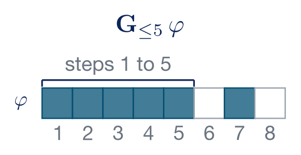
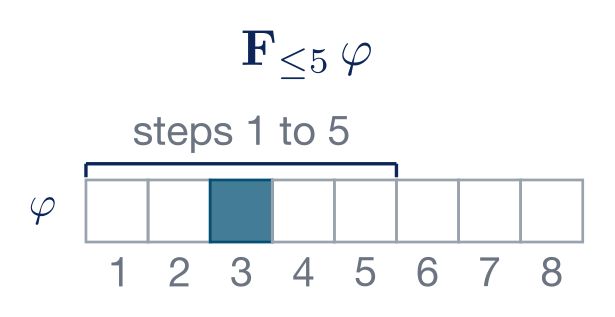
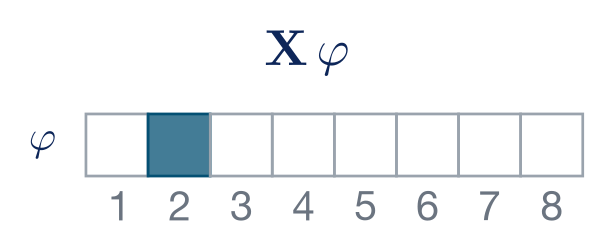
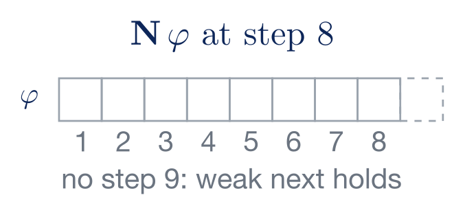
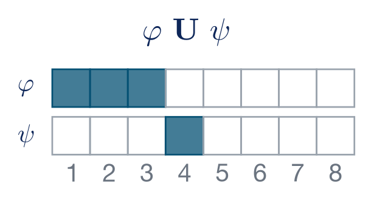
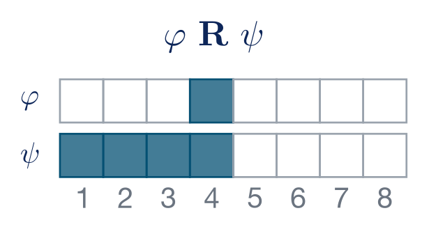

G≤T φ always
φ holds at every step up to T.

Every property: incast, LLM batch scheduling, FQ-CoDel
F≤T φ eventually
φ holds at some step up to T.

Learned conditions (FQ-CoDel, SP-PIFO)
X φ next
There is a next step, and φ holds at it.

Learned conditions (FQ-CoDel, DRR, CoDel, shared buffer)
N φ weak next
If there is a next step, φ holds at it; at the last step it holds.

Learned conditions (FQ-CoDel, CoDel, DRR)
φ U ψ until
ψ holds at some step, and φ holds at every step before it.

Learned conditions (FQ-CoDel, CoDel, DRR, shared buffer)
φ R ψ release
ψ holds up to and including the first step where φ holds, or to the end of the trace.

Learned conditions (DRR, shared buffer, SP-PIFO)
Every trace ends at the model's time horizon, so every operator is bounded; the subscript ≤T names a bound inside it.
| Atom | Theory | Examples |
|---|
| a counter against a constant | linear integer arithmetic | odrops < 8 (incast) · gap(V) < 3 (LLM batch scheduling) · tot_deqsbl(Q5) < 5 (FQ-CoDel) |
| a parameter in a range | intervals over integers and reals | N = 16 ∧ 184 ≤ W ≤ 192 (incast) · 0.28 ≤ pol ≤ 0.32 (LLM batch scheduling) |
| a count or average over a time window | linear arithmetic over integers and rationals, quantified over the window | ∀t ∈ [1, 6]: cenq(Q5, t) ≤ 1 · ∀t ∈ [7, 14]: aipg(Q5, t) ≥ 2 (FPerf's conditions, which the LLM explorer edits for FQ-CoDel) |
| an event at a step | propositions | a5: Q5 receives a packet · e5: Q5 is empty · bl: Q1–Q4 are backlogged (learned conditions) |